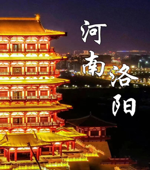
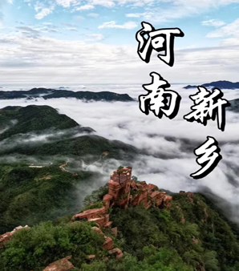
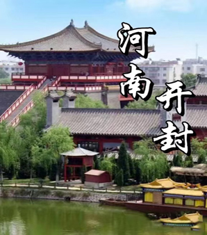
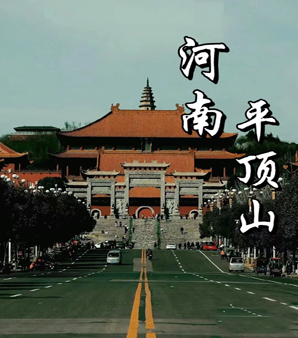
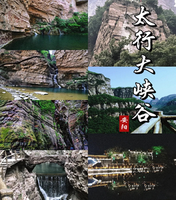
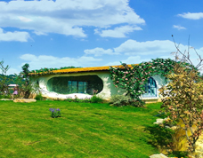
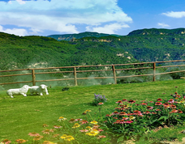
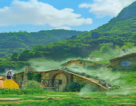
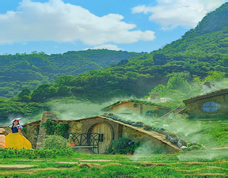
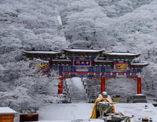

如临童话世界——云台山

云台山以山称奇，以水叫绝，因峰冠雄，因峡显幽，景色荟萃各不同。春来山花烂漫，夏至飞瀑流泉，秋日红叶似火，冬季银装素裹，四季浓淡总相宜。

青龙峡是云台山主要景点之一，有“云台山第一大峡谷”的美称，一年四季风光秀美，各成景色。这里瀑飞泉悬，潭幽溪清，山水含情，草木解意，自然的灵性和生命的灵动在这里演绎得生灵活现。
 云台天池【峰林峡】湖是翡翠湖~“人间天上一湖水，万千景象在其中”。景观姿态万千，美景如画，独具风情的山水立体画卷~乘船游览，穿移景换，水面碧绿柔美，水面宽窄相同，变换有序，让人应接不暇~

峰林峡以山水交融的翡翠湖为主体，被甚赞为“人间天上一湖水，万千景象在其中”，更有“云台天池”的美称。境内十里平湖宛若一条在峡谷中飘拂的玉带，湖区岛屿星罗棋布，湖周峰峦起伏，湖面波光涟漪。
云台天池【峰林峡】湖是翡翠湖~“人间天上一湖水，万千景象在其中”。景观姿态万千，美景如画，独具风情的山水立体画卷~乘船游览，穿移景换，水面碧绿柔美，水面宽窄相同，变换有序，让人应接不暇~

峰林峡以山水交融的翡翠湖为主体，被甚赞为“人间天上一湖水，万千景象在其中”，更有“云台天池”的美称。境内十里平湖宛若一条在峡谷中飘拂的玉带，湖区岛屿星罗棋布，湖周峰峦起伏，湖面波光涟漪。
人间仙境——老君山
老君山景区相传是道教始祖李耳（老子）的归隐修炼之地，北魏时在山中建庙纪念，后来被封为“天下名山”，历来香火旺盛。山中树木茂盛，风景如画，处处都能看到山泉。金秋时分，这里更是周边地区赏红叶的不二之选。
老君山在道教有着和武当山齐名的地位。“南有武当金顶，北有老君铁顶”，甚至连老君山这个名字，都是唐太宗借着老子曾在此修炼的传说御赐下来的。
景区面积庞大，主要分为居中的老君山主景区、西部的追梦谷景区和东部的寨沟景区。一般游客会用一天的时间游玩老君山主景区，这也是整个景区开发完善的区域。如果你去山顶，还有机会观赏到美丽的云海、日出、夕阳。

老君山主景区内包括了中天门、金顶、老君庙、南天门、玉皇顶以及马鬃岭等主要景点。老君庙自北魏始建以来，就是中原香客朝拜的中心；玉皇顶的道观中供奉着玉皇大帝，这里也是山中观景的好地方；